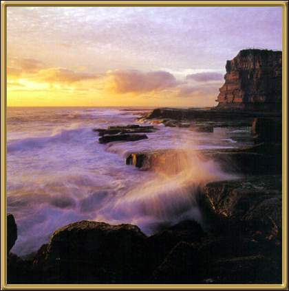

Photographer: Unknown
Quite a stunning area of coastline! However, the most popular attraction in this area is the surfing. Terrigal is a very popular holiday area and is also very close to Bouddi National Park.